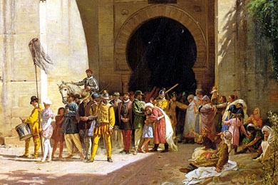

الأندلس، قطعة من الأرض تحمل في طياتها روح حضارية استثنائية. يعكس تاريخها قصة تعدد الثقافات والتناغم الفريد بين المجتمعات المختلفة حيث تتقاطع الفنون والتاريخ في صورة فنية لا تُنسى
الأندلس هو إقليم تاريخي في جنوب إسبانيا، يشكل تقاطعًا حضاريًا غنيًا امتد عبر العصور. يعتبر الفترة الإسلامية (711-1492) ذروة للأندلس، حيث شهدت حضارة مزدهرة تجمعت فيها الفنون والعلوم والفلسفة. استمر التأثير الإسلامي حتى الفترة النصرانية، حيث امتزجت الثقافات لتخلق ميراثًا فريدًا. تأثير الأندلس يظهر في المعمار، والفنون، والعلوم، والأدب، وكان له دور كبير في نقل المعرفة إلى الغرب الأوروبي. الأندلس تمثل نموذجًا للتعايش الثقافي بين الأديان، وتاريخها يروي قصة تنوع وتألق، مما يجعلها محط جذب للباحثين والمسافرين اليوم.
في لحظة تأبى الزمن النسيان، هوت الأندلس، حيث تلاشت عبقريتها الثقافية وتفتتت وحدتها. سقطت تلك الأرض الساحرة، تاركة خلفها جرحًا عميقًا في قلب التاريخ. اليك بعض اسباس تلك الهزيمة :
مجموعة لتحرير الاندلس